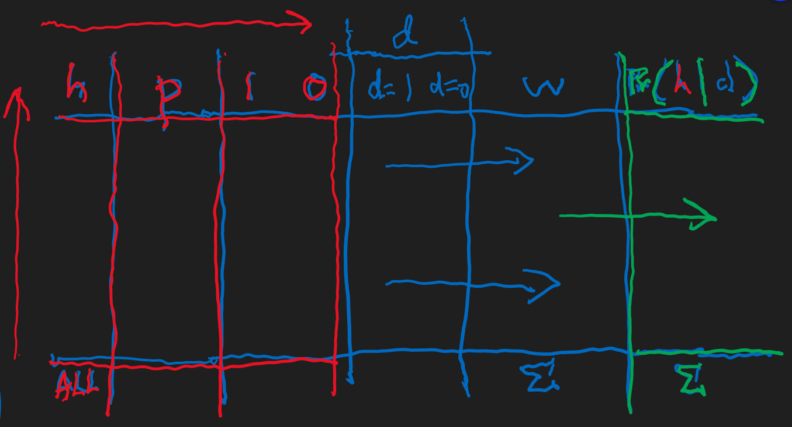
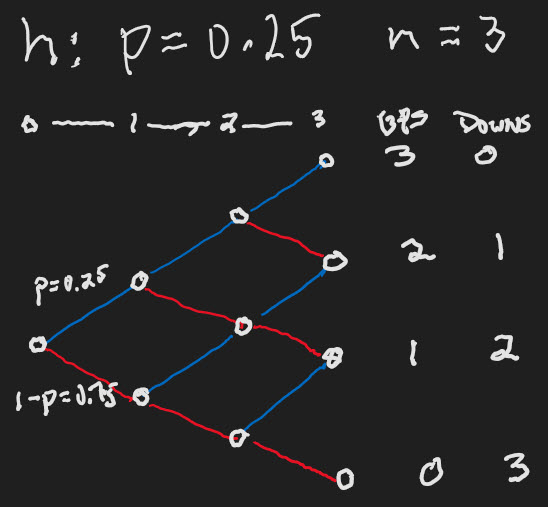
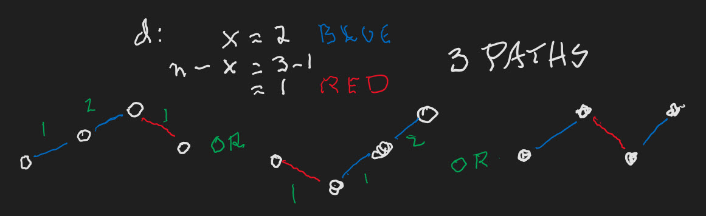
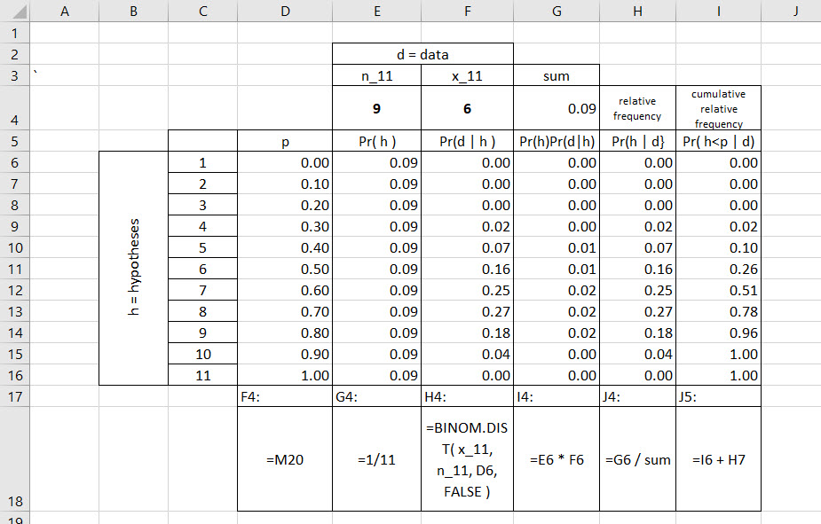
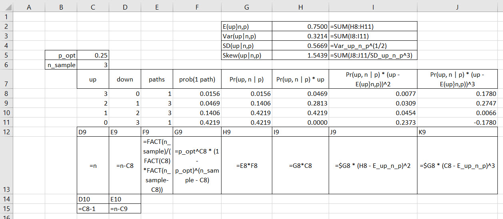
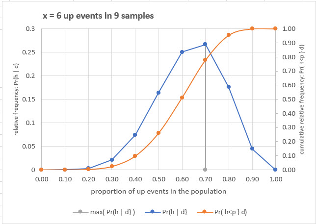
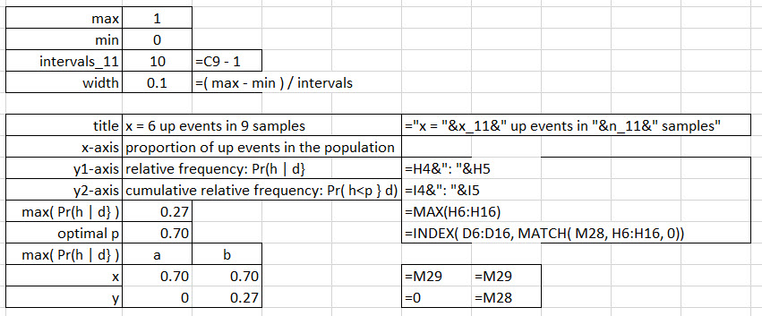

Chapter 4 Algorithmics 2: binomial ups and downs
4.1 Anatomy of an algorithm
The anatomy of our algorithm for counting the ways is an example of a heuristic structure. We recall that such a structure attempts to anticipate that which is unknown. It houses the algorithm to help get to a solution, that is, the one hypothesis which is most consistent with the sampled and observed data. The scaffolding of the algorithm takes on othe role of a visualization, and metaphor, for an algorithm.9
Here is a visualization we can populate with the data flows, logic, and computations in the algorithm.

First, and foremost, we conceive, think about, conjecture whether (coded a 1) or not (coded a 0) in a context an observation might (again a 1) or might not (again a 0) occur in a context, a population. We generate hypotheses (\(h\)) in the leftward red initiation of the structure. Within this sub-structure we also compute (impute if an argument and not a computation) an unobserved datum, \(p\), the proportion of potential observations that might occur.
Having thought through all of the competing hypotheses, we move to the second, the blue sub-structure. There we observe, we sample 1’s and 0’s. These two numbers affirm as true (coded a 1) or do not affirm (0) the sampled existence of an observation. We count the number of 1’s samples, the number of 0’s samples. Then, and this is crucial, we ask how many ways can the number of observed 1’s and 0’s can possibly occur for any given hypothesis. We gather all of the ways.
We perform a cross-cut of unobserved potential hypotheses with the ways observed data can occur according to a specific hypothesis. In the green sub-structure we then deduce the fractional contribution of the ways data is consistent with each hypothesis relative to the total number of ways the data can occur with respect to all hypotheses. We then search for the unobserved and hypothesized data, the hypothesis itself, which is most consistent with the observed sampled data. We label green sub-structure we label as the probability \(Pr\) that hypotheses \(h\) represent the population being observed, given (using the vinculum |) the observed, sampled, data \(d\).
4.2 Ups and downs
Let’s focus on one hypothesis, say, \(p=0.25\), the possibility that the population is 0.25 ups and thus 1-0.25 or 0.75 downs. Here is a hand-drawn view of this hypothesis for a sample of 3 ups and downs.

Lots of activity can appear in graphs (nodes and edges). We start at one end, with zero samples, and move from left to right to 1 sample, which can be either up or down. As we move to two samples we start from the one sample nodes and then go up and down twice. We move to three samples starting with the two sample nodes and again go up or down. We end up with 4 nodes in the end with 3 sampled ups and downs. We have effectively mashed together all of the possible ways samples of size 3 can interact with this one hypothesis.
The data are a sample of three: 2 ups and 1 down. We ask: how many ways can two ups and one down occur? Here is another hand-rendering of the hypothesis tree to answer this question.

Either the left hand path can occur or the right hand path. Here \(x=2\) are the number of ups, \(n=3\) is the sample size, and \(n-x=1\) is the number of downs. It turns out that the probability of one of these paths, that is, that both 2 ups (blue) and 1 down (red) can occur is the product of the probabilities of 2 ups and the 1 down.
\[ \begin{align} 0.25 \times 0.25 \times (1-0.25) &= (0.25)^2 (0.75)^1 \\ &= 0.046875 \\ &\approx 0.047 \end{align} \]
We use this short-hand formula for one path to good use.
\[ p^x (1-p)^{n-x} = 0.047 \] The tree instruct us that either 2 ups followed by 1 down can occur along 3 different paths. The probability that either \(A\) or \(B\) or \(C\) occurs is the sum of the probabilities, when the events are independent from one another, as they are here. The \(\vee\) stands for the or.
\[ Pr( A \vee B \vee C) = Pr(A) + Pr(B) + Pr(C) \]
So we can now see that a path with probability \(0.047\) can happen any one of 3 ways. In this way we can write
\[ \begin{align} Pr(up = 2 \vee down = 1 \mid p = 0.25) &= 0.047 + 0.047 + 0.047 \\ &= 3 ( 0.047) \\ &= 0.141 \end{align} \]
Another way to compute the number of paths so many ups and downs can take is to realize that these are combinations. The formula for finding the number of ways, without regard for the order in which they might occur of \(n\) items taken \(x\) at a time is
\[ _{n}C_{x} = {n \choose x} = \frac{n!}{x! \, (n - x)!} \] \[ \begin{align} _{5}C_{3} = {3 \choose 2} &= \frac{3!}{2! \, (3 - 2)!} \\ &= \frac{3 \times 2 \times 1}{(2 \times 1)\times 1} \\ &= 3 \end{align} \]
Splicing this formula together with the formula for the probability of a single path yields the probability that \(x\) ups occurs in \(n\) moves given that the probability of an up is \(p\).
\[ Pr(x \mid n, p) = \frac{n!}{x! \, (n - x)!}p^x (1-p)^{n-x} \] With our toy example we have this computation.
\[ \begin{align} Pr(x = 2 \mid n=3, p=0.25) &= \frac{3!}{2! \, (3 - 2)!}(0.25)^2 (1-0.25)^{3-2} \\ &= (3)(0.047) \\ &= 0.141 \end{align} \]
Let’s get more precise. We have these conditions.
Two possible event outcomes only in each run or scenario or branch on a path
\(p\) = probability of an up event
\(n\) = number of times outcomes might occur
\(x\) = number of up events
We use three assumptions:
Each replication of the process is a combination of events that results in one of two possible outcomes (usually referred to as “success”" or “failure” events).
The probability of success is the same for each replication.
The replications are independent, meaning here that a success in one replication does not influence the probability of success in another.
Assumption three reveals itself as nodes in the hypothesis tree combining into one another.
With all of these assumptions and definitions, we now have the binomial distribution probability that \(x\) up outcomes occur in \(n\) trials with \(p\) probability of an up outcome. This is a lot easier to compute when \(n\) gets much larger than 3.
We did lose the green and red staircase for this example. But we also do not have to rely on the bag of beans approach to modeling. The unwieldliness of these large ways numbers would soon outrun at every larger values of \(n\) our computers’s ability to count. The binomial algorithm, the formula we just miracled into existence, will solve the large number of ways problem.
4.3 Dispensing with the bag of beans
We just reduced the counting model to a binomial probability calculation. Two are equivalent. We get the same probabilities both ways. We now add to our sophistication by allowing hypotheses to have different levels of influence, and recast the ways which data and hypotheses are consistent with a probabilistic definition.
Here is a screenshot of an Excel rendering of the new, and improved, binomial model.

We rid ourselves of the bag of beans and now realize that only the values of the hypothesized \(p\) proportions, now as probabilities of a single up event, characterize any hypothesis in this model. We generate the \(p\)-grid in column D by specifying the maximum value 1, the minimum value 0, and the number of intervals in the 11 node grid all computed in column K.
We use the Excel built-in function =BINOM.DIST() in column F to calculate probabilities of seeing data \(d\) conditional on a hypothesis \(h\). The parameters of this function mirror the probability mass function derived above. We check the model by computing the value for \(Pr( d:\,up = 2,\,n=3 \mid h:\,p=0.25 )=0.141\) with the binomial distribution formula in cell F12. We have replaced the really large count the ways numbers with decimals.
4.4 Great expectations
Indeed, we can use this model to aggregate our expectations of a binomial outcome. Those outcomes appear on a hypothesis by hypothesis basis. If we believe our model that \(h_4:\,p=0.75\) is the model which is the most plausible, most consistent with the data, then we can model potential outcomes with the binomial model.
The mathematical trick we use is to calculate expected value of outcomes as the weighted average of potential up outcomes. In the same way we can also compute the weighted average of squared deviations of up outcomes from the expected value. Then we can scale this squared-dimensioned variance by taking the square root to get the standard deviation of outcomes.
Here is a set of fairly useful computations on our 5-node workhorse grid in Excel with formulae.

We have computed all of the binomial quantities for the single hypothesis \(p=0.25\) and data \(n=3\) samples across all of the discrete possibilities for the number of ups and downs that we might see in the field.
For each up outcome we calculate the contribution of that outcome, that deviation from expectation squared outcome, to get the expected outcome. We then gather them altogether by summing them up. These aggregations help us summarize the distribution we have worked so hard to compute and understand.
There is a new kid on this block, skewness. This expectation can be positive or negative. One interpretation is that it measures the degree to which (weighted) average deviations favor conditions below or above the expected outcome. If negative we see lots more deviations below; if positive lots more above. We leave it to a context to understand this concretely and practically. By the way a zero skew is a symmetric distribution.
We notice that we take the cubed deviations and scale the weighted average by the cube of the standard deviation, very clever indeed. We also notice that we piggyback the computation by using the weighted squared deviation, more cleverness than we can stand!
Here is a graph of three binomial hypotheses.
Which of these is negatively skewed, positively skewed. no skew at all?
4.5 Then there were eleven
The usefulness of the approach to be rid of the bag of beans shows itself in expanding the grid to 11 nodes. Here is the result.
Nothing has changed but for the granularity of the approximation of the resulting \(Pr(h \mid d)\). In the language of the contingency table:
\(Pr(h)\) is the marginal probability of a hypothesis, also known, and confusingly, the prior probability. The only thing that is prior is that it is a given, an assumption of the analysis.
\(Pr(d)\) is the
sumin the table and is the marginal probability of data, the ups in this case.\(Pr(d \mid h)Pr(h) = Pr(h \wedge d)\) is the joint probability both of \(h\) and \(d\), also known as, and confusingly, likelihood. We can try to add up the likelihoods. And if we do, they will not add up to 1, but they will all be between 0 and 1. Even so, we still cannot call these quantities probabilities.
\(Pr(h \mid d) = Pr(d \mid h)Pr(h)/Pr(d) = Pr(h \wedge d)/Pr(d)\) is the conditional probability of \(h\) given all of the \(d\), also confusingly known as the posterior probability. The only thing that is posterior is that it arrives after all of the hypothetico-deductive work we conducted to get us there.
So much for nomenclature. We will stick with conditional probabilities, probabilities, joint probabilities, multiplication and addition and division. This will help us when we consider non-binary count and continuous data.
Of course we must show the resulting plot and setup for the plot and calculation tables above.

Here are the set up tables.

The first table sets up the 11-node grid. The next table sets up the data needed for the presentation graphic.
Is the distribution of the conditional probability of hypotheses given data positively or negatively skewed, or not at all and thus symmetric?
4.6 References and endnotes
We define a heuristic notion as the concept of an as-yet-unknown content or solution, something to be discovered (Gr. heurisko). A heuristic structure is then an “ordered set of heuristic notions,” according to Lonergan (1970, p.392), that is, a method, insofar as structure is some sort of order. As such it is the procedure or method, not the content of the procedure or method. A solution for a heuristic structure can derive from approximations according to a criterion. Algorithms provide a quantification of some heuristics. Algorithms then form a subset of heuristic structures as anticipations of as-yet-not-known solutions or content.↩